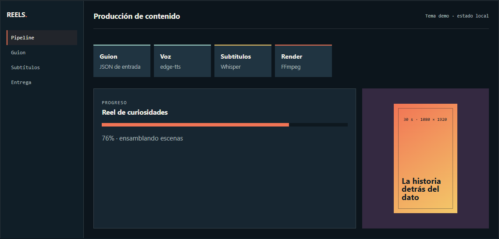
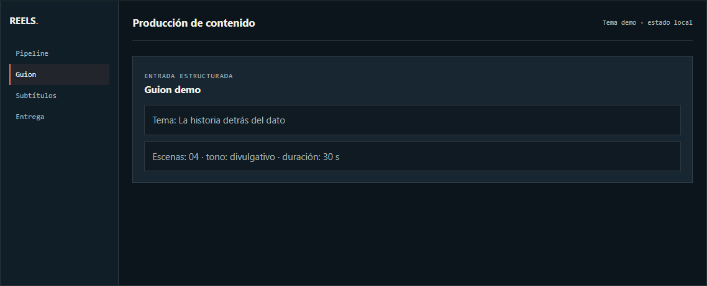
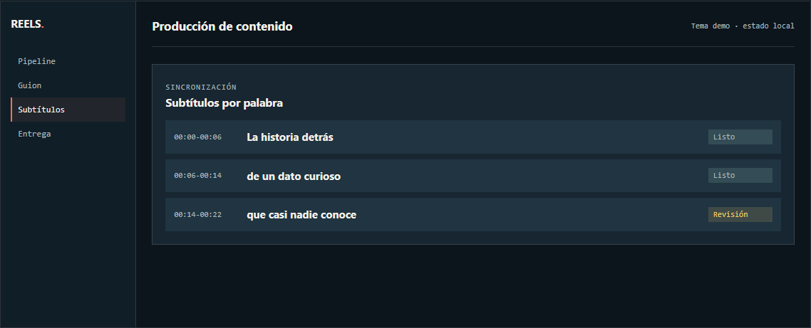
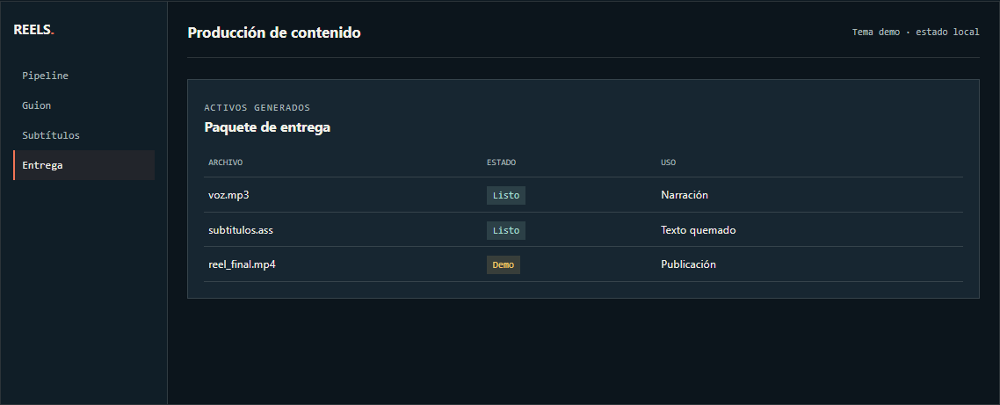
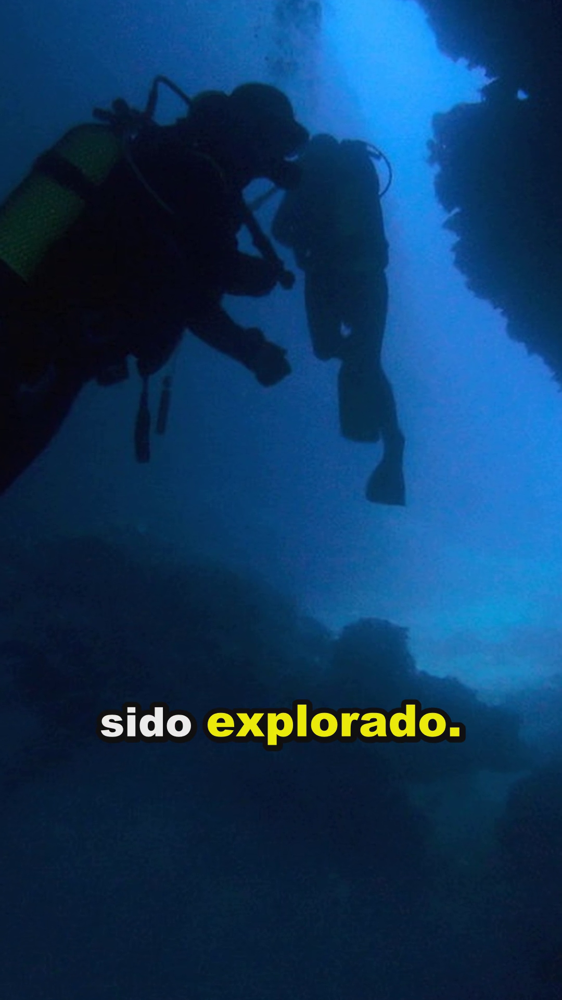
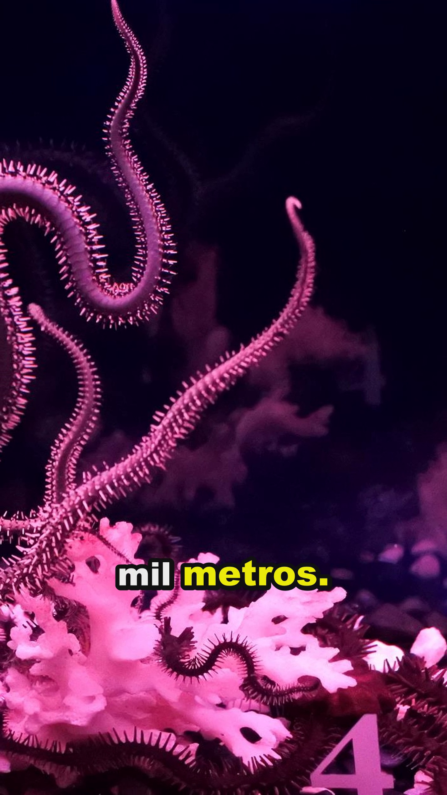
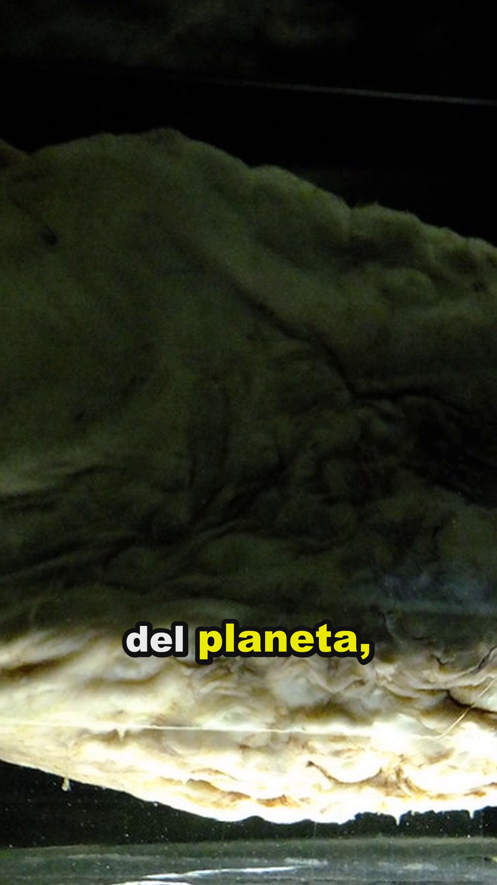
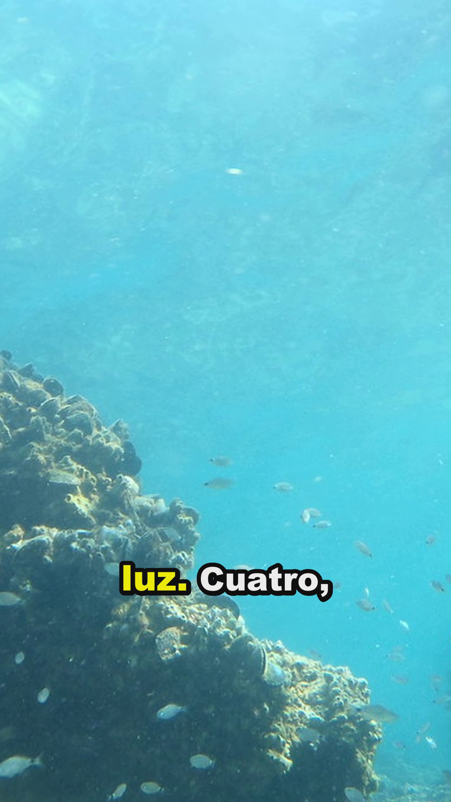
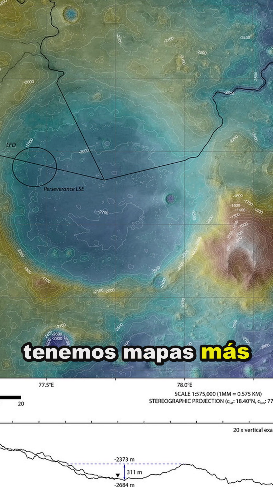

Demo visual · contenido de ejemplo
Fábrica de Reels
Una vista de las etapas internas del pipeline: desde el guion hasta la entrega del video vertical.
Producción de contenido
Tema demo · estado localGuionJSON de entrada
Vozedge-tts
SubtítulosWhisper
RenderFFmpeg
Progreso
Reel de curiosidades
76% · ensamblando escenas
30 s · 1080 × 1920La historia detrás del dato
Entrada estructurada
Guion demo
Tema: La historia detrás del dato
Escenas: 04 · tono: divulgativo · duración: 30 s
Sincronización
Subtítulos por palabra
00:00-00:06La historia detrásListo
00:06-00:14de un dato curiosoListo
00:14-00:22que casi nadie conoceRevisión
Activos generados
Paquete de entrega
| Archivo | Estado | Uso |
|---|---|---|
| voz.mp3 | Listo | Narración |
| subtitulos.ass | Listo | Texto quemado |
| reel_final.mp4 | Demo | Publicación |
Galería de vistas
Etapas del pipeline audiovisual
La demo muestra cómo se transforma un tema en un paquete de contenido vertical.




Salida real del pipeline
Frames del Reel generado
Frames extraídos de una ejecución real de Fábrica de Reels; no incluyen credenciales ni datos de usuarios.




